ZML 字面 圖解教學
每張圖上的紅色編號，對應圖下面的說明。文字版的完整說明在同一個資料夾的「說明書.html」。
一、做出第一支 MV
用 Chrome 或 Edge 打開「開啟.html」。整個「ZML字面」資料夾要一起留著，旁邊的 fonts 資料夾不在的話，特殊字型都不會出現。
步驟 1 放進你的檔案
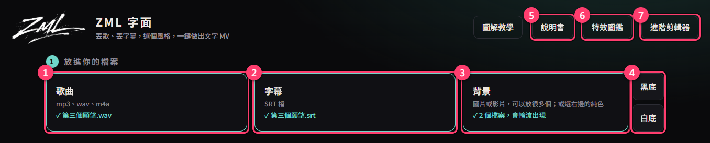
- 1歌曲：把 mp3、wav、m4a 拖進來，或點一下選檔。檔名會當成歌名，間奏時會顯示，請先改成正式歌名。
- 2字幕：SRT 檔。歌詞什麼時候出現、出現多久，全照這個檔的時間。
- 3背景：圖片或影片，可以一次放很多個，會輪流出現。影片會從頭播到尾，播完換下一個。
- 4不想放圖：按 黑底 或 白底。
- 5說明書：文字版的完整說明。
- 6特效圖鑑：每個風格、字體、特效長什麼樣子，見第二節。
- 7進階剪輯器：原版完整的編輯器，見第五節。一般用不到。
步驟 2 選一個感覺
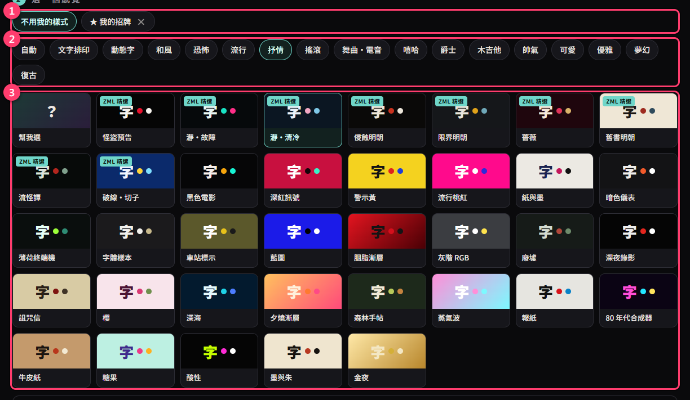
- 1我的樣式：存過才會出現。選了它，下面的設定都照存下來的那一套，見第三節。平常選 不用我的樣式。
- 2主題：歌的類型（抒情、搖滾、恐怖…），決定用哪一類排版和特效。不確定就選 自動。
- 3風格：配色和字體。標「ZML 精選」的是我們配好的特殊字體組合。不確定就選 幫我選。想先看每個風格動起來的樣子，到特效圖鑑的「風格」頁。
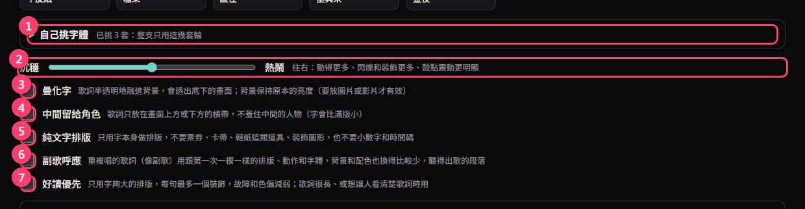
- 1自己挑字體：點一下展開。勾了就只用你勾的字體輪流出現，詳見第四節。
- 2沉穩 ↔ 熱鬧：往右動得更多、閃爍和裝飾更多、跟著鼓點的震動更明顯。
- 3疊化字：歌詞半透明地融進背景。勾了會多出一條「淡 ↔ 濃」滑桿調透明度。只對圖片、影片背景有效。
- 4中間留給角色：歌詞只放在畫面上方或下方，不擋住畫面中間的人物。
- 5純文字排版：只用字本身排，不要票券、報紙這類道具，也不要小數字和時間碼。
- 6副歌呼應：重複唱的歌詞（像副歌）用跟第一次一模一樣的排版、動作和字體，背景和配色也換得比較少。看得出歌的段落，比較有 MV 的結構感。
- 7好讀優先：只用字夠大的排版，每句最多一個裝飾，故障和色偏減弱。歌詞很長、或想讓人看清楚歌詞時用。
浮水印（自己的 logo 或名字）
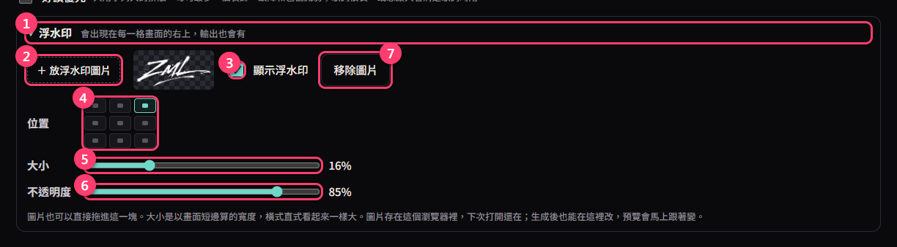
- 1點 浮水印 展開。右邊的小字會告訴你現在的狀態。
- 2＋ 放浮水印圖片：選一張圖，或直接把圖拖進這一塊。建議用去背的 PNG（透明底），不然會連白底一起蓋上去。
- 3顯示浮水印：打勾才會出現。放了新圖會自動勾起來。
- 4位置：九宮格，點哪一格就放哪裡（四個角、四個邊的中間、正中間）。
- 5大小：以畫面短邊算的寬度，所以橫式、直式看起來一樣大。
- 6不透明度：往左越透明。
- 7移除圖片。
浮水印會出現在預覽和輸出的每一格畫面上，不會跟著鼓點震、也不會跟著鏡頭動。生成之後再回來改位置或大小，預覽會馬上跟著變。圖片存在你這台電腦的瀏覽器裡，下次打開還在；每個人放自己的，不會互相影響。
步驟 3 生成
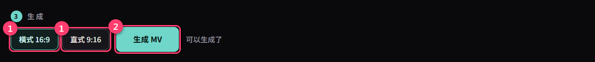
- 1橫式 16:9（YouTube）或 直式 9:16（Shorts、抖音）。
- 2生成 MV：幾秒鐘就會出現預覽。
預覽、換一版、輸出
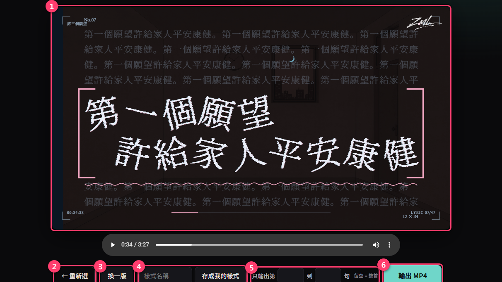
- 1預覽：按下面的播放鍵邊聽邊看，可以拖時間軸跳著看。
- 2← 重新選：回到上一頁換檔案或換設定。
- 3換一版：同樣的設定，重新排一次。不喜歡就一直按，每次都不一樣。
- 4存成我的樣式：喜歡這一版的感覺就存起來，見第三節。
- 5只輸出第幾句到第幾句：只想先輸出一小段看效果時用。留空＝整首。
- 6輸出 MP4：固定 1080p、每秒 60 格。輸出時不要關掉分頁，也不要切去別的分頁太久。
二、特效圖鑑：先看再挑
特效有一千多個，光看名字不可能知道是什麼。圖鑑把每一個都用同一句歌詞畫成會動的小畫面。從首頁右上角或進階剪輯器左上角的 特效圖鑑 打開。
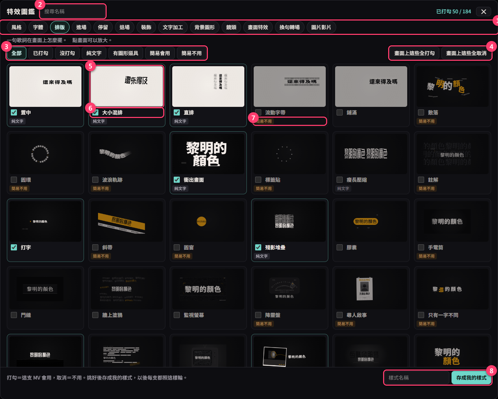
- 1分頁：風格、字體、排版、進場、停留、退場、裝飾、文字加工、背景圖形、鏡頭、畫面特效、換句轉場、圖片影片。
- 2搜尋名稱：打中文找。
- 3篩選：只看已打勾、沒打勾的；排版頁可以只看「純文字」或「簡易不用」的。
- 4畫面上這些全打勾／全取消：只動目前篩出來的那些。只想留幾個時：先全取消，再勾你要的。
- 5小畫面：點一下會放大重複播放。
- 6打勾＝會用，取消＝不用。勾完畫面上這支 MV 會馬上照新的勾重排。
- 7小標籤：「純文字」只有字沒有道具；「簡易不用」是簡易模式平常不會自動用的（字會歪、太小或看不全，滑鼠停在格子上會寫原因）；「可能擋字」是會畫在歌詞上面的裝飾。
- 8存成我的樣式：在圖鑑裡直接存，見第三節。
風格頁
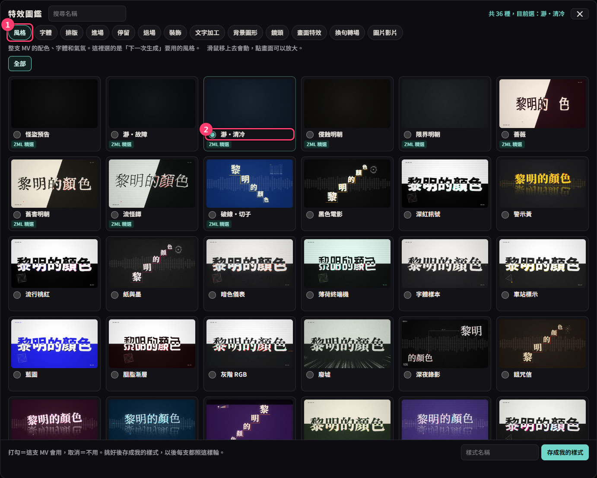
- 1每個風格用三句歌詞示範。平常一秒換一張畫面，滑鼠移上去才會動，點一下放大。
- 2點名字前面的圓圈＝下一次生成用這個風格，等於在首頁點那張風格卡。
字體頁
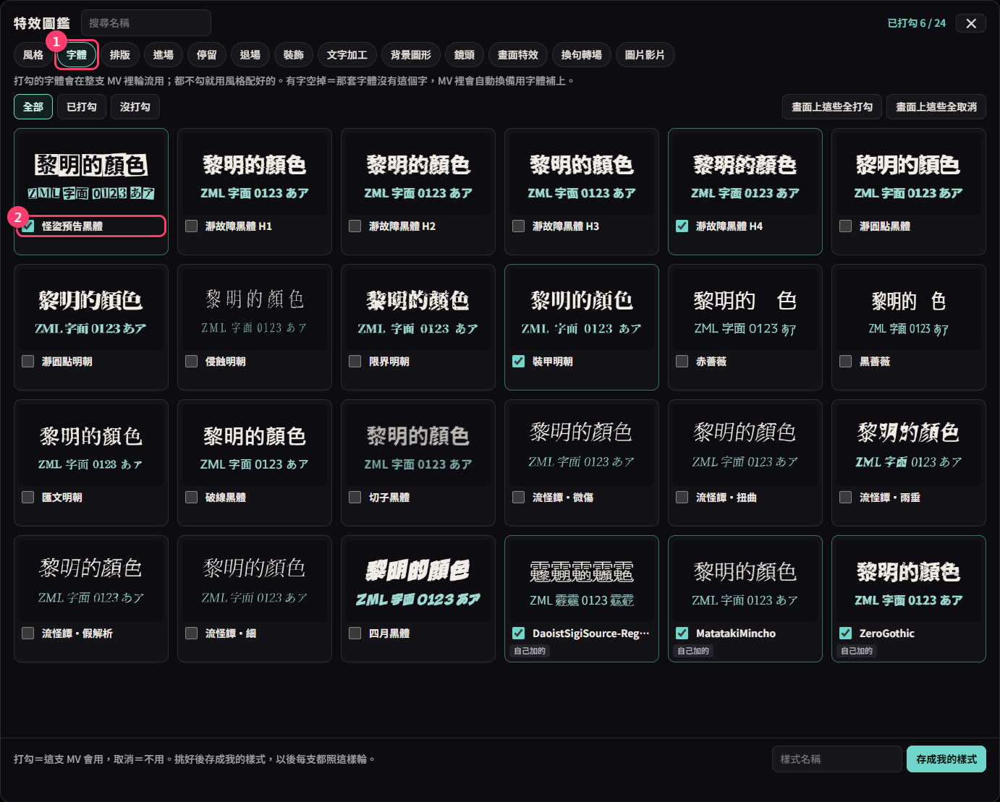
- 1每套字體寫同一句話，你自己加的字型排在最後。
- 2打勾＝等於在首頁「自己挑字體」打勾。有字空掉＝那套字體沒有這個字，MV 裡會自動換備用字體補上。
圖片影片頁（背景的運鏡）
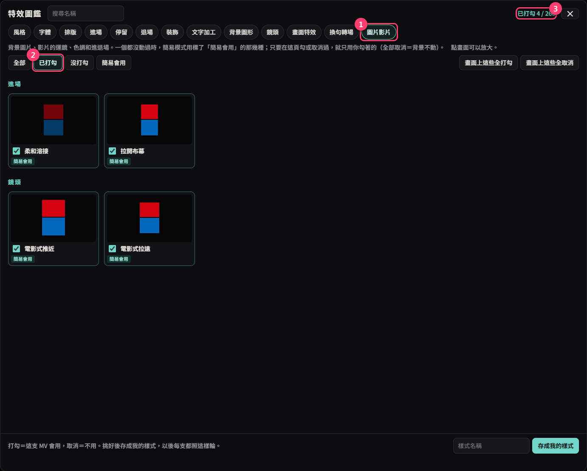
- 1背景圖片、影片怎麼動。一個都沒動過時，用 ZML 挑好的那幾種慢速運鏡（標「簡易會用」）。只要你在這頁勾或取消過，之後就只用你勾著的。全部取消＝背景不動。
- 2按 已打勾 可以檢查現在到底留了哪幾個。
- 3右上角隨時顯示這一頁勾了幾個。
三、存成「我的樣式」，以後都照這樣
平常每次生成、每次換一版都是重新抽。「我的樣式」把你挑好的一整套記下來，之後每支 MV 都只在那一套裡面輪。
- 先在首頁隨便生成一支（選一個接近你想要的風格當起點）。
- 打開 特效圖鑑，一頁一頁把不要的取消、要的留著。每勾一下，背後的 MV 就會照著重排。
- 在圖鑑最下面打一個名字，按 存成我的樣式（下圖）。
- 存好就已經選上了。關掉圖鑑，按 換一版 或重新 生成 MV，都照你勾的走。
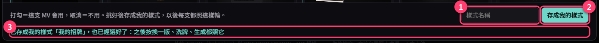
- 1樣式名稱。同名會蓋掉舊的。
- 2存成我的樣式。
- 3看到「已存成我的樣式…也已經選好了」就成功了。
下次怎麼用
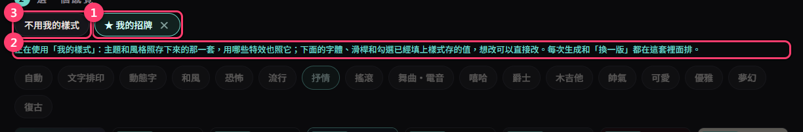
- 1首頁步驟 2 最上面點 ★ 你的樣式名稱。旁邊的 × 是刪除。
- 2出現這行綠字，就代表正在用。這時首頁的主題和風格會變灰，照樣式那一套；字體、滑桿和下面那排勾選都還能調，會先填上樣式存的值，你再改。
- 3想回到每次隨機：點 不用我的樣式。
沒有存就按換一版，勾選會被重新抽掉。挑完一定要存。
「我的樣式」存在你這台電腦的瀏覽器裡：換電腦、換瀏覽器、清除瀏覽資料都會不見，也不會跟著工具傳給朋友。
「我的樣式」存在你這台電腦的瀏覽器裡：換電腦、換瀏覽器、清除瀏覽資料都會不見，也不會跟著工具傳給朋友。
四、加自己的字型
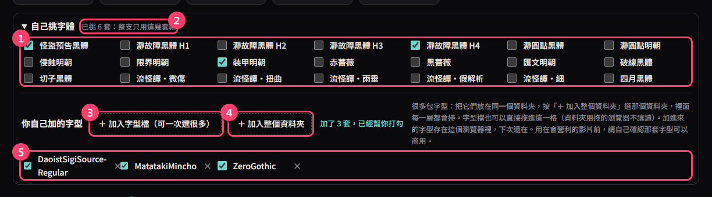
- 1內建字型：都可以放營利影片。勾幾套，整支 MV 就只用那幾套輪流出現；都不勾就用風格配好的。
- 2這裡會顯示你挑了幾套。
- 3＋ 加入字型檔：選檔視窗裡按住 Ctrl 點多個，或 Ctrl+A 全選。
- 4＋ 加入整個資料夾：字型很多時用這個最快。全部放進同一個資料夾，選那個資料夾，裡面每一層都會掃，不是字型的檔案會自動跳過。瀏覽器問「要上傳嗎」請按上傳，那只是讀進這個網頁，不會傳到網路上。
- 5你自己加的字型：加進來會自動打勾，不要了點 ×。
字型會發牌：每套都輪過一次才會重複。所以勾的字型比歌詞句數多時，有幾套這一版一定輪不到，按換一版就會換另一批。
只有英文字母的字型，只會用在英文歌詞。日文字型常缺繁體字，缺字的那句就不會用它。
只有英文字母的字型，只會用在英文歌詞。日文字型常缺繁體字，缺字的那句就不會用它。
自己加的字型能不能放營利影片，請自己確認那套字型的授權。資料夾用拖的不行（瀏覽器不讓讀），請用按鈕；字型檔可以直接拖進「自己挑字體」那一塊。
五、進階剪輯器
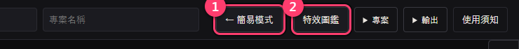
- 1← 簡易模式：回到首頁。
- 2特效圖鑑：跟首頁那個是同一個。
進階剪輯器是原版的完整編輯器，可以單獨改某一句的排版、時間、字體。改完直接在進階裡輸出；如果回簡易頁按換一版，單句的修改會被蓋掉。洗牌 會照你在圖鑑勾的特效重新排。